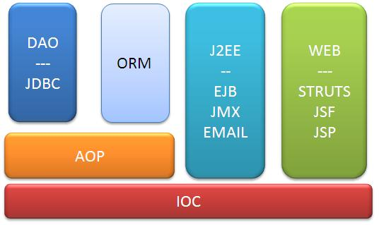
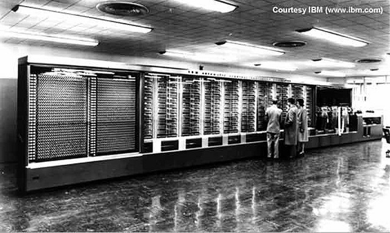

Questioning the Status Quo
(through the looking glass) of Java, OOP and beyond
Who am I?
A software developer just like you
... probably less smart than you, actually
By the way let's see who we are
What will you get out of this talk?
What will you get out of this talk?

Some food for thought and brain teasing
What will you get out of this talk?
A pretty cool list of future readings & videos
What will you get out of this talk?
Things you didn't know
Things you already knew
Things you didn't care to know
What will you get out of this talk?
Extra unsolicited Scala and FP promotion!
Let's start our journey from the beginning
Think about your first steps in programming...
You probably felt excited, curious and every bit of script that worked was so satisfying!
Even if you've been forced to learn programming as schoolwork, you probably got addicted to it sooner or later
...otherwise you wouldn't be here today, listening to this talk
It can happen though, that such passion fades in the background, trampled by daily chores
We should strive to try and keep caring for what we do, and keep alive that initial spark of passion for this activity
“As Developers, as an Industry, we have the potential to create a better society”
Hadi Hariri from jetbrains - Codemotion Rome 2014
slides available here www.slideshare.net/Codemotion/developing-in-a-decade
Do you still care?
Where did I get lost?
a daily routine
messy enterprisey code
bugs, code smells, over-complexity, imperfections
sophisticated solutions to problems...
... needed to solve the industry needs
like faster time to market and tight delivery schedules
The entire Agile movement was born to adapt to and handle this kind of issues
As a personal note, I recommend to take a look at the idea underlying agile, forgetting about costly certifications and easy promisesLet's take a look at some code

code
@Controller
@RequestMapping("/orders/{id}")
@ExposesResourceFor(Payment.class)
@RequiredArgsConstructor(onConstructor = @__(@Autowired))
public class PaymentController {
private final @NonNull PaymentService paymentService;
private final @NonNull EntityLinks entityLinks;
/**
* Accepts a payment for an {@link Order}
*/
@RequestMapping(value = PaymentLinks.PAYMENT, method = PUT)
ResponseEntity<PaymentResource> submitPayment(
@PathVariable("id") Order order,
@RequestBody CreditCardNumber number) {
if (order == null || order.isPaid()) {
return new ResponseEntity<PaymentResource>(HttpStatus.NOT_FOUND);
}
CreditCardPayment payment = paymentService.pay(order, number);
PaymentResource resource = new PaymentResource(order.getPrice(), payment.getCreditCard());
resource.add(entityLinks.linkToSingleResource(order));
return new ResponseEntity<PaymentResource>(resource, HttpStatus.CREATED);
}
source from https://github.com/olivergierke/spring-restbucks
code
/**
* Base class for entity implementations. Uses a {@link Long} id.
*/
@MappedSuperclass
@Getter
@ToString
@EqualsAndHashCode
public class AbstractEntity implements Identifiable<Long> {
@Id
@GeneratedValue(strategy = GenerationType.AUTO)
@JsonIgnore
private final Long id;
protected AbstractEntity() {
this.id = null;
}
}
source from https://github.com/olivergierke/spring-restbucks
pretty terse... uh?
@Entity
@Table(name = "Person", catalog = "TestDB", schema = "dbo")
@XmlRootElement
@NamedQueries({
@NamedQuery(
name = "Person.findAll",
query = "SELECT p FROM Person p"),
@NamedQuery(
name = "Person.findByPersonId",
query = "SELECT p FROM Person p WHERE p.personId = :pId"),
@NamedQuery(
name = "Person.findByPersonName",
query = "SELECT p FROM Person p WHERE p.personName = :pName"),
@NamedQuery(
name = "Person.findByPersonFamily",
query = "SELECT p FROM Person p WHERE p.personFamily = :pFamily"),
@NamedQuery(
name = "Person.findByPersonReference",
query = "SELECT p FROM Person p WHERE p.personReference = :pRef")})
public class Person implements Serializable {
private static final long serialVersionUID = 1L;
@Id
@Basic(optional = false)
@NotNull
@Column(name = "person_id", nullable = false)
private Integer personId;
@Size(max = 50)
@Column(name = "person_name", length = 50)
private String personName;
@Size(max = 50)
@Column(name = "person_family", length = 50)
private String personFamily;
@Column(name = "person_reference")
private Integer personReference;
@OneToOne(cascade = CascadeType.ALL, mappedBy = "person1",
fetch = FetchType.LAZY)
private Person person;
@JoinColumn(name = "person_id", referencedColumnName = "person_id",
nullable = false, insertable = false, updatable = false)
@OneToOne(optional = false, fetch = FetchType.LAZY)
private Person person1;
source from https://groups.google.com/forum/#!topic/querydsl/4lgLx3QQqBA
root-context.xml
<?xml version="1.0" encoding="UTF-8"?>
<beans xmlns="http://www.springframework.org/schema/beans"
xmlns:xsi="http://www.w3.org/2001/XMLSchema-instance"
xmlns:mvc="http://www.springframework.org/schema/mvc"
xmlns:context="http://www.springframework.org/schema/context"
xsi:schemaLocation="
http://www.springframework.org/schema/beans
http://www.springframework.org/schema/beans/spring-beans-3.0.xsd
http://www.springframework.org/schema/context
http://www.springframework.org/schema/context/spring-context-3.0.xsd
http://www.springframework.org/schema/mvc
http://www.springframework.org/schema/mvc/spring-mvc-3.0.xsd">
<import resource="db-context.xml"/>
<!-- Detects annotations like @Component, @Service, @Controller, @Repository, @Configuration -->
<context:component-scan base-package="xpadro.spring.web,controller,xpadro.spring.web.service"/>
<!-- Detects MVC annotations like @RequestMapping -->
<mvc:annotation-driven/>
</beans>
source from https://github.com/xpadro/spring-rest
pom.xml
<?xml version="1.0" encoding="UTF-8"?>
<?xml version="1.0" encoding="UTF-8" standalone="no"?>
<project xmlns="http://maven.apache.org/POM/4.0.0" xmlns:xsi="http://www.w3.org/2001/XMLSchema-instance"
xsi:schemaLocation="http://maven.apache.org/POM/4.0.0 http://maven.apache.org/maven-v4_0_0.xsd">
<modelVersion>4.0.0</modelVersion>
<groupId>org.springsource.restbucks</groupId>
<artifactId>restbucks</artifactId>
<packaging>war</packaging>
<version>1.0.0.BUILD-SNAPSHOT</version>
<name>Spring RESTBucks</name>
<parent>
<groupId>org.springframework.boot</groupId>
<artifactId>spring-boot-starter-parent</artifactId>
<version>1.1.4.RELEASE</version>
</parent>
<properties>
<spring-data-releasetrain.version>Evans-BUILD-SNAPSHOT</spring-data-releasetrain.version>
<spring-hateoas.version>0.15.0.RELEASE</spring-hateoas.version>
<tomcat.version>8.0.9</tomcat.version>
</properties>
<dependencies>
<!-- Spring Data REST -->
<dependency>
<groupId>org.springframework.boot</groupId>
<artifactId>spring-boot-starter-data-rest</artifactId>
</dependency>
<dependency>
<groupId>org.springframework.boot</groupId>
<artifactId>spring-boot-starter-data-jpa</artifactId>
</dependency>
<dependency>
<groupId>org.springframework.boot</groupId>
<artifactId>spring-boot-starter-test</artifactId>
</dependency>
<!-- JDK 8 DateTime support for Hibernate -->
<dependency>
<groupId>org.jadira.usertype</groupId>
<artifactId>usertype.extended</artifactId>
<version>3.2.0.GA</version>
</dependency>
<dependency>
<groupId>com.fasterxml.jackson.datatype</groupId>
<artifactId>jackson-datatype-jsr310</artifactId>
</dependency>
<!-- Database -->
<dependency>
<groupId>org.hsqldb</groupId>
<artifactId>hsqldb</artifactId>
<scope>runtime</scope>
</dependency>
<!-- Misc -->
<dependency>
<groupId>org.springframework</groupId>
<artifactId>spring-tx-events</artifactId>
<version>1.0.0.BUILD-SNAPSHOT</version>
</dependency>
<dependency>
<groupId>org.projectlombok</groupId>
<artifactId>lombok</artifactId>
<version>1.12.6</version>
<scope>provided</scope>
</dependency>
<dependency>
<groupId>com.jayway.jsonpath</groupId>
<artifactId>json-path</artifactId>
<version>0.9.1</version>
</dependency>
</dependencies>
<build>
<plugins>
<plugin>
<groupId>org.apache.maven.plugins</groupId>
<artifactId>maven-compiler-plugin</artifactId>
<configuration>
<source>1.8</source>
<target>1.8</target>
</configuration>
</plugin>
<plugin>
<groupId>org.springframework.boot</groupId>
<artifactId>spring-boot-maven-plugin</artifactId>
</plugin>
</plugins>
</build>
<repositories>
<repository>
<id>spring-libs-snapshot</id>
<url>http://repo.spring.io/libs-snapshot</url>
<snapshots>
<enabled>true</enabled>
</snapshots>
</repository>
</repositories>
<pluginRepositories>
<pluginRepository>
<id>spring-libs-snapshot</id>
<url>http://repo.spring.io/libs-snapshot</url>
<snapshots>
<enabled>true</enabled>
</snapshots>
</pluginRepository>
</pluginRepositories>
</project>
source from https://github.com/olivergierke/spring-restbucks
still there?
well, this can get pretty verbose
can get hard to decode
.486P
CR0_CD equ 040000000h ; Cache Disable bit of CR0
CR0_NW equ 020000000h ; Not Write-through bit of CR0
DisableCache proc
pushf ; save the flags
push eax ; save eax
cli ; disable interrupts while we do this
mov eax,cr0 ; read CR0
or eax,CR0_CD ; set CD but not NW bit of CR0
mov cr0,eax ; cache is now disabled
wbinvd ; flush and invalidate cache
; the cache is effectively disabled at this point, but memory
; consistency will be maintained. To completely disable cache,
; the following two lines may used as well:
or eax,CR0_NW ; now set the NW bit
mov cr0,eax ; turn off the cache entirely
pop eax ; restore eax
popf ; restore the flags
ret ; return to caller
DisableCache endp
code ends
end

"Traditional" enterprise code today looks just like that


Do we dare and try something different?
image © Elena Kaliscode
public class Application extends Controller {
/** Display the login page or dashboard if connected */
public static Result index() {
String email = ctx().session().get("email");
if (email != null) {
User user = User.findByEmail(email);
if (user != null && user.validated) {
return GO_DASHBOARD;
} else {
Logger.debug("Clearing invalid session credentials");
session().clear();
}
}
return ok(index.render(form(Register.class), form(Login.class)));
}
source from https://github.com/yesnault/PlayStartApp
code
public String validate() {
User user = null;
try {
user = User.authenticate(email, password);
} catch (AppException e) {
return Messages.get("error.technical");
}
if (user == null) {
return Messages.get("invalid.user.or.password");
} else if (!user.validated) {
return Messages.get("account.not.validated.check.mail");
}
return null;
}
source from https://github.com/yesnault/PlayStartApp
application.conf
# This is the main configuration file for the application.
# ~~~~~
# Secret key
# ~~~~~
# The secret key is used to secure cryptographics functions.
# If you deploy your application to several instances be sure to use the same key!
application.secret="..."
# Global object
# ~~~~~
# Define the Global object type for this application.
# Default to Global in the root package.
# global=Global
# Database configuration
# ~~~~~
# You can declare as many datasources as you want.
# By convention, the default datasource is named `default`
#
db.default.driver=org.h2.Driver
db.default.url="jdbc:h2:mem:play"
#
# You can expose this datasource via JNDI if needed (Useful for JPA)
# db.default.jndiName=DefaultDS
# Evolutions
# ~~~~~
# You can disable evolutions if needed
# evolutions=disabled
# Ebean configuration
# ~~~~~
# You can declare as many Ebean servers as you want.
# By convention, the default server is named `default`
#
ebean.default="models.*"
# Logger
# ~~~~~
# You can also configure logback (http://logback.qos.ch/), by providing a logger.xml file in the conf directory .
# Root logger:
logger.root=WARN
# Logger used by the framework:
logger.play=INFO
# Logger provided to your application:
logger.application=DEBUG
application.langs="fr,en"
# The public facing name of the site. Used when sending reset emails.
server.hostname="localhost:9000"
include "mail"
source from https://github.com/yesnault/PlayStartApp
routes.conf
# Home page
GET / controllers.Application.index()
GET /dashboard controllers.Dashboard.index()
POST /login controllers.Application.authenticate()
GET /logout controllers.Application.logout()
GET /settings controllers.account.settings.Index.index()
GET /settings/password controllers.account.settings.Password.index()
POST /settings/password controllers.account.settings.Password.runPassword()
GET /settings/email controllers.account.settings.Email.index()
POST /settings/email controllers.account.settings.Email.runEmail()
...
source from https://github.com/yesnault/PlayStartApp
build.sbt
import sbt.Keys._
name := "PlayStartApp"
version := "1.0-SNAPSHOT"
scalaVersion := "2.10.4"
libraryDependencies ++= Seq(
jdbc,
javaEbean,
cache,
"org.mindrot" % "jbcrypt" % "0.3m",
"com.typesafe" %% "play-plugins-mailer" % "2.2.0",
filters
)
resolvers ++= Seq(
"Apache" at "http://repo1.maven.org/maven2/",
"jBCrypt Repository" at "http://repo1.maven.org/maven2/org/",
"Sonatype OSS Snasphots" at "http://oss.sonatype.org/content/repositories/snapshots"
)
lazy val root = (project in file(".")).enablePlugins(play.PlayJava)
source from https://github.com/yesnault/PlayStartApp
It's all here folks
What am I trying to say?
It's too easy to get lost in cluttered technicalities
Complex environments can blur the overall picture
Every so often it's good to critically examine the tools we use
Moreso if they result from some predetermined policy
Find some time to explore new opportunities, they don't always pay back, but sometimes they do
Don't be scared by the learning curve, you've been there already!
About the "learning curve"
Rich Hickey (clojure, datomic) made interesting remarks about the different meaning of
simple and easy
presentation available here www.infoq.com/presentations/Simple-Made-Easy-QCon-London-2012
Hammock Driven Development
Hickey also discussed about the creative process and problem solving
Hammock Driven Development
About how solutions from related or unrelated fields can inspire new perspectives
Hammock Driven Development
About the need to focus
Hammock Driven Development
presentation available here https://www.youtube.com/watch?v=f84n5oFoZBc
Quiz Time
In “The Art of Agile Development”
the author explores the concept that
source code is actually the real software design
He supports the concept with an example showing how modern structured programming conveys the program flow much better than Assembly code
1000 NS% = (80 - LEN(T$)) / 2
1010 S$ 0= ""
1020 IF NS$ = 0 GOTO 1060
1030 S$ = S$ + " "
1040 NS% = NS$ - 1
1050 GOTO 1020
1060 PRINT S$ + T$
1070 RETURN
So much that we seldom need flow diagrams anymore
Can you make out what both of these functions do?
def version1(text: String) {
val center = (LENGTH - text.size) / 2
var space = ""
for (i <- 0 until center) {
space += " "
}
println(space + text + space)
}
def version2(text: String) = {
def recurse(space: String): String =
if ((space*2 + text).size == LENGTH) space + text + space
else recurse(space + " ")
println(recurse(""))
}
Which version was easier to grok?
Before the second test we need some preparation
//A class with some simple-to-understand attributes
class Person(val name: String, val age: Int, val gender: String)
//An appendable "array-like" class
class ArrayBuffer
ready?
So let's rock it!
def version1(queued: Iterable[Person]): Iterable[Person] = {
val (boyz, girlz) = queued.filter(_.age > 18)
.partition(_.gender == "male")
val boyzIn = boyz take (girlz.size / 2)
val in = (boyzIn ++ girlz).to[Set]
for (boy <- boyz if !in(boy))
println(s"Go home, ${boy.name}. Better luck tommorrow, kiddo!")
in
}
def version2(queued: Iterable[Person]): Iterable[Person] = {
val girlz = ArrayBuffer[Person]()
val boyz = ArrayBuffer[Person]()
for (person <- queued) {
if (person.age > 18) {
if (person.gender == "male") boyz.append(person)
else girlz.append(person)
}
}
val in = ArrayBuffer[Person]()
in.appendAll(girlz)
for (i <- 0 until boyz.size) {
if (i < girlz.size / 2) in.append(boyz(i))
else println(s"Go home, ${boyz(i).name}. Better luck tommorrow, kiddo!")
}
return in
}
Same results?
Maybe we learned something
“It is not only the violin that shapes the violinist, we are all shaped by the tools we train ourselves to use, and in this respect programming languages have a devious influence: they shape our thinking habits.”
Edsger W. Dijkstra - Letter to the budget council of The University of Texas at Austin
the whole letter is here www.cs.utexas.edu/users/EWD/OtherDocs/To%20the%20Budget%20Council%20concerning%20Haskell.pdf
Watch out for the
"hammer syndrome"
Try to get a deeper understanding of the tools at your disposal
So you can take informed decisions about the best solution to the problem at hand
"Conventional" solutions are stable but sometimes best tailored to yesterday's problems
Look for opportunities to explore new ideas
A short and approximate parade of exploration opportunities for the modern java developer
At the design level

| Conventional | Unusual |
|---|---|
CRUD |
Domain Driven Design |
ORM |
Event Sourcing |
MVC |
CQRS |
At the framework stack level

| Conventional | Unusual |
|---|---|
Servlet |
Play! |
JSP |
Vert.x |
JSF |
Typesafe Config |
Spring |
JOOQ |
Java-EE |
Gradle |
Maven |
sbt |
At the language level
| Conventional | Unusual |
|---|---|
| java | groovy |
| javascript | kotlin |
| sql | ceylon |
| scala | |
| clojure | |
| haskell! |
Have a look at
Matt Raible's
devoxx '13 presentation
to get some inspiration regarding modern web development technologies
here is the video
www.parleys.com/play/5298cbe3e4b039ad2298c9db/
and here the slides
[beware! heavy pdf]
Time to take off and fly a little higher
the Object-Oriented vs. Functional debate
Even though it's hard to define both, we can try to identify some core features of each
| OOP | FP |
|---|---|
| Modularity/Scoping | Composability |
| Encapsulation (reduce dependencies) | Abstraction |
| Mathematical Reasoning (pureness & immutability) |
both approaches have reusability and simplicity as goals
Suggested readings on the subject
D.L. Parnas - On the Criteria To Be Used in Decomposing Systems into Modules
www.cs.umd.edu/class/spring2003/cmsc838p/Design/criteria.pdf
M.Odersky; M.Zenger - Scalable Component Abstractions
lampwww.epfl.ch/~odersky/papers/ScalableComponent.pdf
J.Hughes - Why Functional Programming Matters
www.cse.chalmers.se/~rjmh/Papers/whyfp.html
H.Abelson; G.J.Sussman - Structure and Interpretation of Computer Programs
mitpress.mit.edu/sicp/
Impedance Mismatch
OOPattaches behaviour to dataFPseparates functions from data
Interestingly, the FP approach to data is considered an
anti-pattern in OOP
Impedance Mismatch (detour)
Object Relational Mapping has been called
“The Vietnam of Computer Science”
blog.codinghorror.com/object-relational-mapping-is-the-vietnam-of-computer-science/
Is Relational Database always the best choice?
“Database Driven Development” anyone?
Once again, keep watch for opportunities!

NoSql
|
NoDB!
|
Still more high level
Where's innovation in the programming world?
Internet of Things?
Raspberry Pi?
Arduino?
Smart Glasses?
...?
Who's innovating?
Bill Gates?
Steve Jobs?
Mark Zuckerberg?
...?
What I'm looking after is tools that could change
the way we think about programming
in out daily work
often with tech available even as we speak
Tools from the near future?
- REPL
- Scala Worksheet
- Chris Granger's Light Table
- Elm debugger
- Swift Playground
- Microsoft is also researching in the area of Live UI Programming with TouchDevelop along the same lines
As Light Table came out, Granger made some research to figure out
“what's wrong in programming”
, and what kind of solutions he could come up with
His reasoning is better explained on his blog
www.chris-granger.com/2014/03/27/toward-a-better-programming/
where he shows the progress of a new project called Aurora
Similar ideas can be found on this blog entry about Legible Mathematics
Wolfram Language
- knowledge based and cloud deployed
- math functions and algorithms
- data visualization
- nlp
- data and visualisation from many world-wide domains
- everything based on symbolic functions manipulation (includes symbols, images, docs, graphs...)
Wolfram Data Frameworkontology
The people who imagined such tools
- stopped thinking about what we already know about software development
- and asked what we can actually do with the technology at our disposal
- can we stop taking for granted the way we develop and focus on how we would like to develop?
Most of the ideas we just saw were inspired by the creativity of this young talented guy
Bret Victor
His area of interest is the future of computing, education, data visualization and manipulation
Suggested material includes
The future of programming:
worrydream.com/#!/TheFutureOfProgramming
Inventing on principle:
worrydream.com/#!/InventingOnPrinciple
Magic Ink:
worrydream.com/#!/MagicInk
Influences
It strikes me how often Victor cites works and "explorers" from the historical or contemporary computer science research and other fields
Many of these influencial people's stunning innovations, date back to the early days of the computer age
The point here is
How much can we learn from the past?
“I have this strong feeling that the more I look into the latest approaches or hard problems in today's software, the more I find myself looking back”
just me
Whenever we discover new cool approaches and ideas about computer science, they're probably inspired by past research, tackling the same old fundamental issues
- design patterns
- λ-calculus
- type systems
- data representation
- big data
- distributed systems
- actors
- reactive programming
Quoting some haskell evangelist?
“One inconvenient thing about a purely imperative language is that you have to specify far too much sequencing. For example, if you wish to do a matrix multiplication, you have to do n³ multiplications. If you write an ordinary program to do this, you have to specify the exact sequence which they are all to be done. Actually, it doesn't matter in what order you do the multiplications so long as you add them together in the right groups. Thus the ordinary sort of imperative language imposes much too much sequencing, which makes it very difficult to rearrange if you want to make things more efficient.”
P.J. Landin - The Next 700 Programming Languages, 1966
www.cs.cmu.edu/~crary/819-f09/Landin66.pdf
Though the information age is all around us now, the history of software and computers is still very young
To look forward we also need to look back
Back from the Future
Future of: applications
- Sep 2013
- the reactive manifesto - www.reactivemanifesto.org
- Feb 2009 (first public commit)
- support by the akka framework - www.akka.io
- 1990 (first presentation)
- inspired by erlang language - www.erlang.org
- 1973
- based on the actor model from Carl Hewitt - Hewitt; Bishop; Steiger; “A Universal Modular Actor Formalism for Artificial Intelligence. IJCAI”
Future of: software design
- 2012
- Uncle Bob Martin quotes an article about software design from Jack W. Reeves in his book on “Agile Software Development, principles, patterns and practices”
- 1985
- the author published a reply to said article, after 13 years of reviews and comments - “What is software design: 13 years later”
- 1972
- the original article - “What is software design?”
- 1962
- the idea supported in the article, that “the code, as written by the developer, is the actual application design”, had been already clear to Reeves for 10 years
www.developerdotstar.com/mag/articles/reeves_design_main.html
Future of: data modeling
The late William Kent's book “Data & Reality”
- 2012 (3rd ed.)
- updated and commented by Steve Hobermann
- 2000 (2nd ed.)
- reprinted practically unchanged from the original edition
- 1978 (1st ed.)
- 1967 - a sentence, quoted in the book preface
“We do not, it seems, have a very clear and commonly agreed upon set of notions about data - either what they are, how they should be fed and cared for, or their relation to the design of programming languages and operating systems”
[G.H.Mealy]- Both Kent, in the first edition, and Hobermann, in the most recent, confirm the validity of this sentence from 1967 at the time of writing!
I think that innovation comes from the same open-minded approach of those past years, when the future of computing was still largely unwritten
Leaving back some unneeded baggage could make creativity sprout
Possible visions of software's future
Paul Chiusano - The future of software, the end of apps, and why UX designers should care about type theory
pchiusano.github.io/2013-05-22/future-of-software.html
Jamie Brandon - Imperative thinking and the making of sandwiches
http://www.lighttable.com/2014/07/18/imperative-thinking/
Conclusions
The interesting problems of computer science don't seem to have changed much over the last 50 years or so
- code reasoning/ease of use
- program correctness
- memory allocation/GC
- concurrency/parallelism
- distributed computing
- artificial intelligence/data mining
- ...
We can get a lot of inspiration from field pioneers and research material
Never stop learning
Freedom
Being free is not about doing whatever we please, but about not being constrained by our limited knowledge
Contacts

plus.google.com/u/0/+IvanoPagano/
Further discussion
The problems of the past are not solved...
Why? What can we do about it?